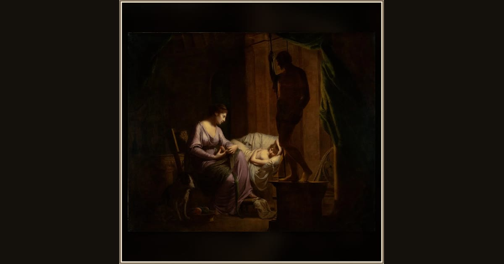

Penelope Unraveling Her Web
Joseph Wright of Derby · 1783–1784 · The J. Paul Getty Museum · Los Angeles, USA
By candlelight, Penelope secretly unpicks the weaving she made all day, buying time until her Odysseus can come home. Explore its place in Book II of the Odyssey.